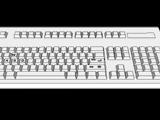
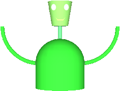
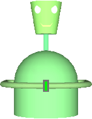
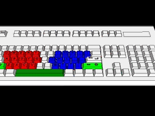

Subscribe to the Olinsky RSS feed if you would like to be notified when new versions of the game are uploaded.
Alien have invaded camp. Everyone has fled...except Olinsky! Now Olinsky must destroy the aliens and save the camp.
You should switch your browser to full screen mode before starting the game. This can usually be done by going to View → Full Screen or by clicking outside the applet and pressing F11. Repeat the process to exit full screen mode. The Apple Safari and Google Chrome browser do not have a full screen modes.
If the applet does not run properly, you may need to update Java.

Controls
The game uses mainly A, S, D, W, ENTER, and SHIFT. You use A, S, D, and W like the arrow keys. Use A and D to move left and right. ENTER and W will make Olinsky jump. Press S to end your jump at any point. Press SHIFT to punch. Due to glitches that may occur when walking, I have allowed players to switch between the normal walking graphic and the standing graphic by pressing "~" at any time. You can return to the title screen at any time by pressing ESC (always return to the title screen before quitting) and shut off the background music by pressing BACKSPACE (press BACKSPACE again to turn the music back on). The game will run faster with the background music off.
Enemies
Whenever you touch an enemy, you will lose health and become invincible for a few seconds. If you press ENTER or W the moment you land on an enemy's head, you will jump off withouot taking damage. This can help you reach higher places but requires very good timing. It usually works better with dead enemies.
|  |
Slackoids
|
|  |
Blastoids
|
Song session is not available in the demo version.
The timing may be slightly off on slower computers.

Controls
The controls are meant to be like banging on a table. The left half of the keyboard (Q, W, E, R, T, A, S, D, F, G, Z, X, C, and v) makes Olinsky bang with his left hand and the right half (I, O, P, [{, ]}, J, K, L, ;:, '", M, <,, >., and /?) makes Olinsky bang with his right hand. Press the space bar to clap and press SHIFT to shout out words displayed to Olinsky's left. These are usually for call-and-response sections, extra words that are not usually in the song, or other cheers. Press ESC at any time to return to the song menu and again from there to return to the title screen. Always return to the title screen before quitting.
Storyline, Game Design, Website, and Programming: Zachary Yaro
Music: "Adventure Map" (From Super Smash Bros. Brawl: The Subspace Emissary)
"Bramble Blast" by Michiko Naruke (From Super Smah Bros. Brawl)
"Step: The Plain" (From Super Smash Bros. Brawl: The Subspace Emissary)
Original Game Testers & Debuggers: Daniel Belin, Andrew Martin, Maya Nagan, Ethan Yaro, Denis Yaro. Marjorie Yaro
Special Thanks: Eric Olinsky, Alec Thomson, K'far Noar of 2K8
Storyline, Game Design, Website, and Programming: Zachary Yaro
Special Thanks: Eric Olinsky, Inverted Productions, K'far Noar of 2K8, 'Rah '09